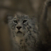
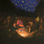

AI art is becoming more and more common among short-form content, music videos, and of course, art. However, many might not understand how exactly these images are created. In this part of the project, I attempt to create different images and even optical illusions.
It's easy to "destroy" a clear image into white noise -- however, it's hard to reconstruct a real image from white noise. A more easy reconstruction process would be to reverse or undo the process of destroying an image, also known as "denoising" an image.
For example, using HuggingFace's diffusion model package, we can create images using the prompts:
These images were created using "inference steps" of 20. This means that the image was denoised 20 times. If we increase the number of denoising steps, we get a more "accurate" image (which looks more realistic and less AI-art looking). The drawback of increasing the denoising steps is that it takes longer.

The same prompts, but with inference steps = 100

The same prompts, but with inference steps = 50 for step1, and inference steps = 20 for step2.
Given this real campanile image:

I perform the forward process, which is given by the equation:
Where alpha represents a cumulative product of the amount of noise is removed each time, and epsilon represents a random value picked within a Normal distribution ~N(0, 1). I can try to blur the image to denoise it, but that doesn't work well. The best kernel size I found was k=7:

Therefore, instead of simply blurring, I implement one-step denoising . The idea of one step denoising is that for different time steps, we estimate the amount of noise present in the noisy image. If we then subtract that estimated amount of noise from the noisy image, theoretically we should get a clean image. This works pretty well for small time steps (i.e. images that are not too noisy), but gets progressively worse as the image gets more noisy:
To fix this issue, we denoise in many steps, also known as iterative denoising . In the image below, I compare iterative denoising with one-step denoising:

These images were generated using i=10, but if I set i to 0, I can denoise random noise to make images based on a prompt (the prompt was "a high quality image"):



To improve the image quality even more, I use a technique called Classifier-Free Guidance (CFG). The gist of this technique is that I blend a conditional image estimate (image with a prompt like "a high quality image") with an unconditional image estimate (image with no prompt) to create the final output.
The equation for blending the two types of images is u + gamma(c-u) , where u is the unconditional noise estimate, c is the conditional noise estimate, and gamma is a constant that represents the strength of the CFG (a higher gamma value means the output will follow the conditional prompt more).
Here are some images generated using CFG with a gamma value of 7:


Depending on our i_start value (noise level), the accuracy of the photo (how similar it is to the test image) differs. The higher i is, the more accurate the image becomes -- by i=20, we get a campanile:


I try this on two of my own images: an image of a dog, and an image of a landscape from a Pokemon game.


This can not only be done on images I own, but can also be performed on images that exist on the internet as well as hand-drawn images. Here, I get an image of a strawberry from the web, and also draw a squid and a bird.


We can also use CFG to perform inpainting. If I have a mask of any shape, I can replace just parts of the test image where the mask is white (equal to 1.0). For example, I define a square mask on the campanile:
As you can see in the right image, just the square part is inpainted, so just the contents of the square are edited/created using CFG. The top of the campanile, when inpainted with a square mask on top, doesn't look like the campanile anymore. I do this with other images too:
Here, I use text-conditioned translation . For part 1.7.1-1.7.2, I used just the prompt "a high quality image" so there was freedom among what kind of images were generated during each timestep (ex. a photo of a girl generated before the bird image in 1.7.2), but if we instead provide a prompt like "a rocket ship", then we can generate photos that look like the prompt before reaching the final image in the last timestep. Here, you can see that the images during the intermediate timesteps look like a rocket ship before ultimately converging to my Pokemon image from the previous parts:


I try this on the campanile image, with the same rocket ship prompt:


I can also try different prompts, like "a photo of a hipster barista" converging to my dog image:


I could also use unets to create images anagrams. These are images that look like one thing, but when flipped look like something else. In order to do this, I first generate an image with one prompt using a unet and call that e1. Then. I flip the original image and generate another image with the other prompt using the flipped image. I flip that to get e2. To get the final noise estimate e, I average e1 and e2 and add variance (similar to the CFG step from 1.6). Here, I create an image that looks like an old man (left) but looks like people around a campfire when the image is flipped (right):


Here's another example:


Now I use other prompts: a snowy mountain village from the right side up, but a skull when flipped:


My final example is that of a dog, but a human when flipped:
I can also use a similar code sequence to create hybrid images, which are images that look like one thing from close up but look like another thing from far away. This can be done using lowpass and highpass filters, just like from project 2. The first two images look like a waterfall from up close, but look like a skull from far away. The image in the middle looks like a snowy village from up close, but a rocket ship from far away. The two images on the right look like people at a campfire from up close, but a man from far away.
I unfortunately didn't have enough time to finish part B because of a business trip, but I was able to do part of the first question, which is to create a noisy image for the digits. I then tried to train the model, but one trouble I had was that torch.concat kept changing the shape of my image to the shape described in the diagram on the spec.